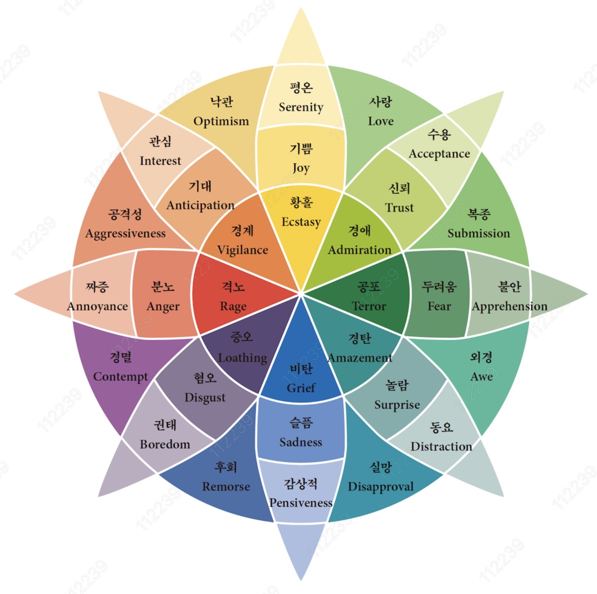

← 돌아가기
플루칙의 감정 바퀴
Plutchik's Wheel of Emotions

8가지 기본 감정 스펙트럼(심화→기본 →약화)
기쁨
Joy
강한 감정 (중심)
황홀
Ecstasy
기본 감정 (중간)
기쁨
Joy
약한 감정 (외곽)
평온
Serenity
신뢰
Trust
강한 감정 (중심)
경애
Admiration
기본 감정 (중간)
신뢰
Trust
약한 감정 (외곽)
수용
Acceptance
두려움
Fear
강한 감정 (중심)
공포
Terror
기본 감정 (중간)
두려움
Fear
약한 감정 (외곽)
불안
Apprehension
놀람
Surprise
강한 감정 (중심)
경탄
Amazement
기본 감정 (중간)
놀람
Surprise
약한 감정 (외곽)
동요
Distraction
슬픔
Sadness
강한 감정 (중심)
비탄
Grief
기본 감정 (중간)
슬픔
Sadness
약한 감정 (외곽)
감상적
Pensiveness
혐오
Disgust
강한 감정 (중심)
증오
Loathing
기본 감정 (중간)
혐오
Disgust
약한 감정 (외곽)
권태
Boredom
분노
Anger
강한 감정 (중심)
격노
Rage
기본 감정 (중간)
분노
Anger
약한 감정 (외곽)
짜증
Annoyance
기대
Anticipation
강한 감정 (중심)
경계
Vigilance
기본 감정 (중간)
기대
Anticipation
약한 감정 (외곽)
관심
Interest
혼합 감정(두 가지 기본감정)
낙관
Optimism
기대 + 기쁨
공격성
Aggressiveness
분노 + 기대
경멸
Contempt
혐오 + 분노
후회
Remorse
슬픔 + 혐오
실망
Disapproval
놀람 + 슬픔
외경
Awe
두려움 + 놀람
복종
Submission
신뢰 + 두려움
사랑
Love
기쁨 + 신뢰
감정
Emotion
×